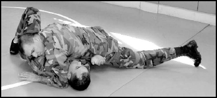

Co dělat
- Tlačit hrudníkem diagonálně přes ramena soupeře.
- Zavírat lokty soupeře k trupu a brát prostor.
- Přecházet mezi side control a north-south podle rámů.
BJJ POSITION
Kontrolní pozice s jiným úhlem tlaku, vhodná pro izolaci ramen a škrcení.

V North-South drž boky nízko, hlavu mimo osu soupeřových nohou a kontroluj jeho lokty proti trupu.